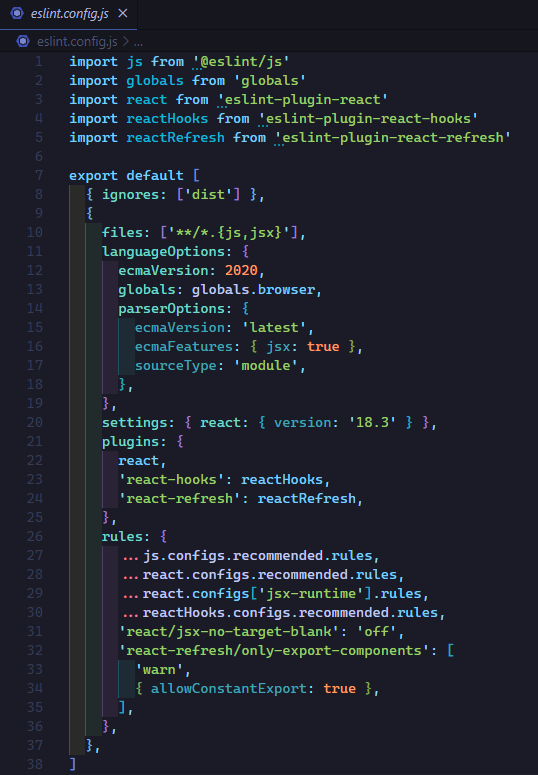

Hasta ahora nos hemos centrado en las tareas que debemos de realizar para que nuestro proyecto funcione y las alternativas que tenemos para lograrlo. Ahora vamos hablar sobre las buenas prácticas a la hora de escribir nuestro código.
Hasta este punto hemos escrito el código de la forma que no ha parecido más oportuna y el editor nos ha proporcionado poca o ninguna ayuda.
¿Qué es un linter?
Un linter es una herramienta que analiza el código fuente para detectar errores, malas prácticas o inconsistencias con respecto a un conjunto de reglas predefinidas. Su objetivo principal es mejorar la calidad del código, ayudando a los desarrolladores a escribir código más limpio, consistente y menos propenso a errores.
Características clave de un linter:
-
Detección de errores de sintaxis: Los linters pueden encontrar errores de sintaxis antes de que se ejecuten, como variables mal declaradas o funciones mal escritas.
-
Cumplimiento de convenciones: Pueden forzar el cumplimiento de convenciones de estilo de código (como el uso de comillas simples o dobles, espacios o tabulaciones) para mantener un código uniforme en todo el proyecto.
-
Advertencias de buenas prácticas: Los linters pueden advertir sobre patrones de código que, aunque válidos, no siguen las mejores prácticas (como variables no usadas, funciones demasiado largas, etc.).
-
Prevención de errores comunes: Algunas reglas ayudan a evitar errores comunes que pueden causar problemas en el funcionamiento del programa, como la referencia a variables no definidas.
Ejemplos de linters:
En resumen, un linter actúa como un "corrector" de código, ayudando a mantener el proyecto libre de errores y siguiendo estándares de calidad desde el principio.
Configuración predeterminada de ESLint
Cuando nosotros creamos nuestra aplicación con Vite, ESLint ya viene instalado y configurado.
Veamos la configuración predeterminada.

Explicación de configuración
Ignorar la carpeta "dist"
-
{ ignores: ['dist'] } Este fragmento indica que ESLint debe ignorar la carpeta dist, que generalmente contiene los archivos generados después del proceso de build, y no se desea hacer linting de esos archivos.
Configuración de lenguaje y entorno
-
files: ['**/*.{js,jsx}'] Define que ESLint debe analizar todos los archivos con extensión .js y .jsx en tu proyecto.
-
ecmaVersion Establece que el código debe estar basado en ECMAScript 2020, lo que permite utilizar características más avanzadas de JavaScript.
-
globals.browser Define que estás trabajando en un entorno de navegador y carga los identificadores globales de los navegadores, como window, document, etc., para que ESLint no los marque como indefinidos.
-
ecmaFeatures: { jsx: true } Habilita JSX, que es esencial para React, permitiendo que ESLint lo entienda.
-
sourceType: 'module' Indica que estás usando módulos ES6 (import/export), lo cual es común en proyectos de React.
Configuración específica para React
Plugins de ESLint
-
react Carga el plugin de React (eslint-plugin-react), que proporciona reglas específicas para linting de código React.
-
react-hooks Este plugin (eslint-plugin-react-hooks) asegura que los hooks de React se usen de manera correcta siguiendo las reglas de React, como las de dependencia de efectos (useEffect).
-
react-refresh Este plugin (eslint-plugin-react-refresh) asegura que las actualizaciones de componentes en caliente (HMR) funcionen correctamente en entornos de desarrollo, como con Vite.
Reglas personalizadas
react. configs.recommended.rules Reglas recomendadas para React.
react. configs['jsx-runtime'].rules Reglas que son específicas para el nuevo JSX runtime de React 17+.
reactHooks. configs.recommended.rules Reglas recomendadas para el correcto uso de hooks en React.
Reglas personalizadas adicionales
'react-refresh/only-export-components': ['warn', { allowConstantExport: true }] Advierte si exportas algo que no sea un componente en un entorno donde react-refresh esté activo, pero permite constantes de exportación.
Si necesitas hacer ajustes en el futuro, puedes personalizar las reglas según tu estilo de código o las necesidades del proyecto.
Agregando guía de estilos - Standard
Vite no incluye la configuración de StandardJS por defecto. Solo se incluyen las reglas recomendadas de JavaScript y React.
¿Qué es StandardJS?
StandardJS es una guía de estilos ampliamente utilizada para JavaScript que impone un conjunto de reglas de estilo muy estrictas, como no usar punto y coma al final de las líneas, uso consistente de comillas simples, y más. Esto puede mejorar la consistencia del código y reducir debates sobre el estilo dentro de un equipo.
Anteriormente cuando se configuraba ESLint manualmente, una de las opciones más comunes era seguir la guía de estilo de Standard para tener un código uniforme y bien estructurado.
Inconvenientes de agregar StandardJS:
-
Posible incompatibilidad con reglas actuales: Si ya tienes configuraciones personalizadas en ESLint, agregar StandardJS puede generar conflictos o inconsistencias con las reglas que ya has definido.
-
Reglas muy estrictas: Algunas reglas de StandardJS (como no usar punto y coma) pueden ser demasiado estrictas o no alinearse con tus preferencias o las de tu equipo. Si no te gusta su estilo, puede que prefieras algo más flexible o personalizado.
-
No es necesario si ya tienes reglas que te funcionen: Si ya tienes una configuración que cubre las reglas que prefieres y te sientes cómodo con ella, añadir StandardJS podría ser redundante.
Alternativas
-
Configurar ESLint a medida: Puedes continuar usando ESLint y configurarlo manualmente con las reglas que mejor se adapten a tu proyecto. Ya tienes una buena configuración de ESLint que incluye reglas para JavaScript y React.
-
Prettier : Si solo te interesa el formato del código, podrías usar Prettier, que es una herramienta específica para formateo de código y puede trabajar en conjunto con ESLint.
Instalar ESLint con la configuración de StandardJS
Agregar StandardJS a una configuración existente de ESLint puede requerir ajustes y pruebas para asegurarte de que todo funcione bien. La configuración predeterminada de Vite no incluye StandardJS para mantener la flexibilidad, permitiendo que los desarrolladores elijan sus propias configuraciones y guías de estilo según sus necesidades.
Primero, necesitas instalar StandardJS y su conjunto de reglas:
npm install eslint-config-standard eslint-plugin-import eslint-plugin-node eslint-plugin-promise --save-dev
Después debemos modificar el archivo de configuración de ESLint para incluir StandardJS en extends:
import js from '@eslint/js'
import globals from 'globals'
import react from 'eslint-plugin-react'
import reactHooks from 'eslint-plugin-react-hooks'
import reactRefresh from 'eslint-plugin-react-refresh'
export default [
{ ignores: ['dist'] },
{
files: ['**/*.{js,jsx}'],
languageOptions: {
ecmaVersion: 2020,
globals: globals.browser,
parserOptions: {
ecmaVersion: 'latest',
ecmaFeatures: { jsx: true },
sourceType: 'module',
},
},
settings: { react: { version: '18.3' } },
extends: [
'eslint:recommended',
'plugin:react/recommended',
'plugin:react-hooks/recommended',
'standard' // Agrega esta línea para usar las reglas de StandardJS
],
plugins: {
react,
'react-hooks': reactHooks,
'react-refresh': reactRefresh,
},
rules: {
...js.configs.recommended.rules,
...react.configs.recommended.rules,
...react.configs['jsx-runtime'].rules,
...reactHooks.configs.recommended.rules,
'react/jsx-no-target-blank': 'off',
'react-refresh/only-export-components': [
'warn',
{ allowConstantExport: true },
],
},
},
]
Después debemos revisar y ajustar las reglas de ESLint y StandardJS para asegurarte de que no haya conflictos. Puedes ajustar las reglas en tu configuración si es necesario.
Después de agregar StandardJS, ejecuta npm run lint y corrige los problemas que aparezcan. Esto te ayudará a adaptar tu código a las nuevas reglas de estilo.
Agregar Standard es puramente opcional, lo puedes omitir.